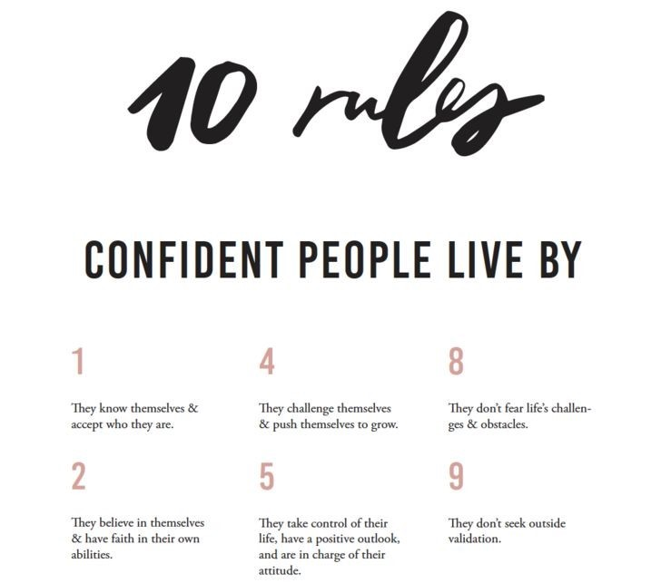
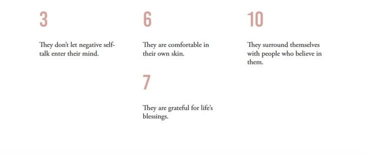

Confidence is a state of being clear-headed either that a hypothesis or prediction is correct or that a chosen course of action is the best or most effective. Confidence comes from a Latin word 'fidere' which means "to trust"; therefore, having self-confidence is having trust in one's self. Arrogance or hubris, in comparison, is the state of having unmerited confidence; believing something or someone is capable or correct when they are not. Overconfidence or presumptuousness is excessive belief in someone (or something) succeeding, without any regard for failure. Confidence can be a self-fulfilling prophecy as those without it may fail or not try because they lack it and those with it may succeed because they have it rather than because of an innate ability. There are 10 rules confident people live by;
 